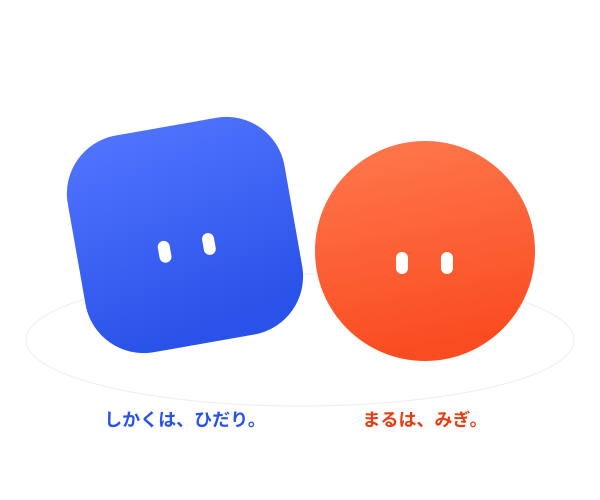

小さなリズムの挑戦
はじめから、左右は別々。裏拍・休符・違う間隔のリズムに挑戦できます。
しかくは左。まるは右。
音符が線に重なったら、タップ。
iOS 17以降。はじめの3リズムは無料です。

はじめから、左右は別々。裏拍・休符・違う間隔のリズムに挑戦できます。
お手本を聴いて、片手ずつ、ゆっくり。難しい一拍も確かめられます。
はじめの3つは無料。残り15の演奏と練習を解放。月額料金と広告はありません。購入時の価格はApp Storeでご確認ください。
青は左手、朱色は右手。音符が線に重なるとき、下の同じ側をタップします。同じ高さの音符は両手で。先に見える音符の順番に合わせて遊びます。
まず内蔵スピーカーでお試しください。設定の「判定タイミング」で調整できます。音に合わせたタップが遅く判定される場合は＋方向、早く判定される場合は−方向へ少しずつ調整します。Bluetoothでは音の遅れが変わる場合があります。
購入時と同じApple Accountを使い、設定または解放画面の「購入を復元」を選んでください。購入・復元には通信が必要です。購入後のプレイにアプリ独自のアカウントは不要です。
設定の「プレイ記録をリセット」でベストスコアとクリア記録を削除できます。購入履歴は削除されません。
お問い合わせ：shuuuya0616@gmail.com
端末名、iOSのバージョン、リズム番号、発生した操作を添えてください。カード番号やパスワードは送らないでください。